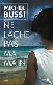

On part en vacances!
Ne Lâche pas ma main - Michel Bussi
 Voilà un roman sur lequel je suis mitigé... Entre le Thriller et le roman "normal", Michel Bussi nous emmène sur l'Île de la Réunion dans laquelle se dresse une intrigue (un peu trop) pleine de suspens.
Faites votre valises (n'oubliez pas de quoi vous protéger du soleil), réservez vos billets d'avion, on part en vacances - ou presque - à La Réunion.
Prêt?
3... 2...1... Décollage
Résumons résumons
Nous voilà enfin arrivés à La Réunion. J'espère que le voyage a été agréable.
Alors, ça vous plaît?
Bien, alors résumons.
Comme dirait un clown connu de tous, C'est l'histoire d'un mec... (big up, Coluche).
Oui, c'est l'histoire d'un mec, Martial, sa gonzesse, Liane (non non, pas la chanteuse, je vous rassure ;p) ainsi que leur fille, Sofa (si si, je vous jure, c'est vraiment son blaze), qui partent en vacances à La Réunion (bon ça, vous l'aurez compris, je pense).
Le programme de leur journée? Rien de plus simple: bronzette, farniente, plage, piscine. Bref, le kiff le plus total!... Enfin presque. Parce qu'en vérité tout ne va pas se dérouler comme prévu...
Liane, un beau jour, disparaît de l'hôtel. Bon là c'est déjà chaudard.
Mais ça se complique encore quand Martial devient le principal suspect, parce qu'il a été apperçu avec un chariot utilisé pour le nettoyage des chambres.
Comment vous dire qu'il est mal barré pour s'en sortir, le bougre.
Bon et là, le bonhomme a une idée des plus... des plus... des plus ingénieuse *ironie*.
Vu qu'il est accusé de la disparition de sa femme, le gars va décider de fuire, avec sa fille.
Martial et Sofa vont donc nous emmener avec eux à travers cette magnifique île.
Va-t-il réussir à prouver son innocence?
Les + intéressants / Les - intéressants
Le résumé est alléchant, n'est-ce pas? L'histoire semble bonne. La trame de l'histoire est alléchante et ça donne vraiment envie de le lire. Et vous avez raison...
Voici un tableau qui récapitule les points positifs et les points négatifs du roman :
Les + interessants
- Personnages réalistes
- Belle "visite" de la Réunion
- Utilisation des mots locaux
- On s'y croirait. On prend la place des personnages
- Fin surprenante
Les - intéressants
- Long à démarrer
- Trop de suspens tue le suspens
- Beaucoup (trop) de moments de lenteur
- Pas assez de rebondissements
- Les moments où l'action retombe sont trop nombreux
Pas Recommande